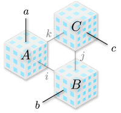
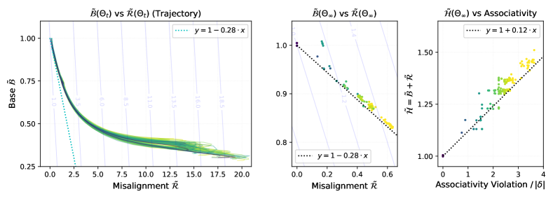

All theoretical results on Cayley-table completion and the associativity gap are mechanically verified in Lean 4.
Abstract
Discovering discrete algebraic rules from data is a fundamental challenge in machine learning. We formalize this problem through Cayley-table completion – an algebraic counterpart to classical matrix completion – where the degree of associativity violation replaces linear rank as the intrinsic measure of complexity. We provide a rigorous landscape analysis of HyperCube, an operator-valued tensor factorization, on the fully observed target table $δ$, proving that its global infimum $H_{\inf}(δ) := \inf_{Θ\in F_δ} H(Θ)$ implicitly defines an exact differentiable measure for this complexity. We show that HyperCube's native objective $H(Θ)$ decomposes into two components: geometric alignment (collinearity) and an inverse $\ell_2$ penalty. We establish that these continuous variational pressures induce core discrete properties: collinearity enforces associativity (Collinearity–Associativity Equivalence), and the inverse $\ell_2$ penalty reduces to an exact inverse rank penalty within the collinear manifold, driving the parameters toward full-rank unitarity. Consequently, we derive an absolute lower bound $H(Θ) \ge H_{\inf}(δ) \ge 3 \, |δ|$, where $|δ|$ is the target table size. We prove this absolute floor is attained if and only if the target is isotopic to a group, and characterize the global minimizer as the regular representation of the underlying group (up to unitary gauge), resolving the central open conjecture of Huh (2025). This work serves as an existence proof that certain discrete algebraic structures can be exactly characterized by differentiable measures, enabling gradient-based discovery without the need for combinatorial search. All theoretical results are mechanically verified in Lean 4 and confirmed via small-scale experiments.
Problem
Discovering discrete algebraic rules (group structures) from data is a fundamental challenge in machine learning. There was no provably exact differentiable measure for algebraic complexity that could distinguish groups from non-associative structures.
Approach
The authors formalize the problem through Cayley-table completion, where the degree of associativity violation replaces linear rank as the complexity measure. They provide a rigorous landscape analysis of HyperCube, an operator-valued tensor factorization, proving that its global infimum implicitly defines an exact differentiable measure: zero if and only if the target is a group (up to isotopy). All theoretical results are mechanically verified in Lean 4.

Figure 1: Illustration of HyperCube product (Reproduced from [ 10 ] ).
Results
The global infimum H_inf(delta) equals zero if and only if delta encodes a group (up to isotopy), providing an exact differentiable criterion for associativity. The orthogonal decomposition decouples the objective into geometric and scale components, and geometric alignment on a collinear manifold implies algebraic structure. Results are confirmed via small-scale experiments and verified in Lean 4.

Figure 2: Empirical Verification of Optimization Dynamics and the Associativity Gap. Plots track the normalized objective terms ( \tilde{\mathcal{B}}_{\delta}\coloneqq\mathcal{B}_{\delta}/\mathcal{H}^{*}_{\delta} , \tilde{\mathcal{R}}_{\delta}\coloneqq\mathcal{R}_{\delta}/\mathcal{H}^{*}_{\delta} ) for diverse quasigroup targets. Background contour lines (Left, Middle) visualize the underlying obj